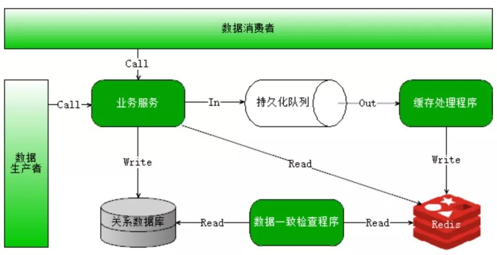

分布式、高并发、多线程，到底有什么区别？
当提起这三个词的时候，是不是很多人都认为分布式=高并发=多线程？
当面试官问到高并发系统可以采用哪些手段来解决，或者被问到分布式系统如何解决一致性的问题，是不是一脸懵逼？
确实，在一开始接触的时候，不少人都会将三者混淆，误以为所谓的分布式高并发的系统就是能同时供海量用户访问，而采用多线程手段不就是可以提供系统的并发能力吗？实际上，他们三个总是相伴而生，但侧重点又有不同。
什么是分布式？
分布式更多的一个概念，是为了解决单个物理服务器容量和性能瓶颈问题而采用的优化手段。该领域需要解决的问题极多，在不同的技术层面上，又包括：分布式文件系统、分布式缓存、分布式数据库、分布式计算等，一些名词如Hadoop、zookeeper、MQ等都跟分布式有关。从理念上讲，分布式的实现有两种形式：
水平扩展：当一台机器扛不住流量时，就通过添加机器的方式，将流量平分到所有服务器上，所有机器都可以提供相当的服务；
垂直拆分：前端有多种查询需求时，一台机器扛不住，可以将不同的需求分发到不同的机器上，比如A机器处理余票查询的请求，B机器处理支付的请求。
什么是高并发？
相对于分布式来讲，高并发在解决的问题上会集中一些，其反应的是同时有多少量：比如在线直播服务，同时有上万人观看。
高并发可以通过分布式技术去解决，将并发流量分不到不同的物理服务器上。但除此之外，还可以有很多其他优化手段：比如使用缓存系统，将所有的，静态内容放到CDN等；还可以使用多线程技术将一台服务器的服务能力最大化。

什么是多线程？
多线程是指从软件或者硬件上实现多个线程并发执行的技术，它更多的是解决CPU调度多个进程的问题，从而让这些进程看上去是同时执行（实际是交替运行的）。
这几个概念中，多线程解决的问题是最明确的，手段也是比较单一的，基本上遇到的最大问题就是线程安全。在JAVA语言中，需要对JVM内存模型、指令重排等深入了解，才能写出一份高质量的多线程代码。
总结一下：
●分布式是从物理资源的角度去将不同的机器组成一个整体对外服务，技术范围非常管且难度非常大，有了这个基础，高并发、高吞吐等系统很容易构建；
● 高并发是从业务角度去描述系统的能力，实现高并发的手段可以采用分布式，也可以采用诸如缓存、CDN等，当然也包括多线程；
● 多线程则聚焦于如何使用编程语言将CPU调度能力最大化。
分布式与高并发系统，涉及到大量的概念和知识点，如果没有系统的学习，很容易会杂糅概念而辨识不清，在面试与实际工作中都会遇到困难。如果你从事Java开发，具备1年以上工作经验，希望深入浅出了解Java分布式、高并发等技术要点，渴望实现技术和职业成长上的双重突破，那么以下福利就很适合你：
1月10日-1月16日，网易云课堂将会开展为期7天的Java进阶免费系列直播课。由多位拥有10+年Java开发经验的讲师向你传道高并发、分布式、大数据、高可用系统的架构设计，每天2小时，密集输入Java开发相关知识及经验，帮你快速实现技术和职业成长上的突破。
福利1 免费直播课程
《网易云课堂Java进阶免费系列直播课》
适听人群：Java初、中级开发工程师
1.10-1.16 连续7天每晚8点准时直播
▼
1月10日：安全架构之Https，让你的隐私数据不再暴露
1月11日：90分钟掌握分布式锁应用与实现
1月12日：基于Redis的分布式锁实现方案
1月13日：还搞不懂Tomcat原理就晚了 - 带你从零手写Tomcat
1月14日：大型系统设计核心之一- 分布式订单号生成策略
1月15日：缓存失效导致系统挂掉！如何解决这个深坑
1月16日：高性能缓存可靠性设计 - Redis高可用集群实战
报名方式：
扫描下方二维码添加助教小姐姐微信，
通过审核后即可免费报名


福利2 Java开发资料包
该资料包中主要包括「大数据容器数据库架构技术文档」、「大型公司技术文摘」、「Java开发参考书籍」、「Java开发学习图谱」等内容，全方位扩充你的知识体系。

想要参与Java进阶免费系列直播课
以及获取Java开发工程师资料包的同学，
可以长按扫描下方二维码，
添加网易云课堂Java课程助教小姐姐
网易云课堂Java进阶免费系列直播课报名通道


免费课程，名额有限，先到先得~~